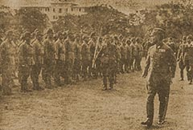

|
j
a v a s c r i p t |
April 3, 1944
La Vanguardia: "Stricter enforcement of blackout from today.... Mayor orders arrests for infractions" — nothing about the why of the blackout "alerts". He specifically fingered third-party nationals as not complying with the orders. This is strictly incorrect; third party nationals know they're on the spot and are the most careful of all. Japanese civilians, knowing it was just practice and not giving a hang about it, were the worst offenders for the first two nights. Well they got the message: tonight two of them are fully blacked out and the third Japanese in our street was safely within the limits.

Army Chief Kuroda inspecting troops
yesterday in the Luneta Radio reception is on the blink once again. German radio said the Philippines was bombed, which can't be or the Japanese would be forcing us to declare war; Palau was occupied, which we think is too soon or maybe a feint. Business is at a standstill pending reports on Palau, and I'm no longer sure which way yesterday's trucks were going as a lady saw them heading back into Manila later. Maurice and I planted 14 papaya seedlings and are proud of our efforts. We have 20 banana trees a-growing and already have five bunches on matured trees. Every house in Manila is planting. |
|
|
|
|